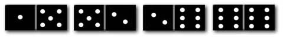

Item: tModelOtherRecursive2b
Stem:
Dominoes are rectangular-shaped tiles. Each tile is divided by a line across the
center that separates the piece into two ends. Each end may have between 0 and 6 dots (an end with 0 dots
appears blank). You can arrange dominoes in a chain by matching the number of dots on the ends where they touch.
Tyne has a set of dominoes. She removes all of the dominoes that have an end with no dots (blanks) on them.
She selects four dominoes from the remaining pile and arranges them end to end, as shown in the figure below.

Moving from left to right, the sequence that corresponds to the above figure is:
1, 5, 5, 2, 2, 6, 6, 6
Which of the following sequences might represent a different set of four dominoes, arranged end to end?
Options:
2, 1, 1, 4, 4, 3
2, 1, 1, 4, 4, 3, 3, 3
2, 1, 1, 4, 4, 3, 5, 3
1, 5, 5, 2, 2, 6
2, 1, 1, 4, 4, 3, 3, 5, 5, 6
Key:
- Observable: 2.
Score: 1;
Evidence Value: 1.
-
Student:Right!
-
Teacher:The student got this item correct.
- Observable: 1.
Score: 0;
Evidence Value: 0.
-
Student:Sorry, that's not right. Only 3 dominoes
were represented by your choice of 2, 1, 1, 4, 4, 3. The correct answer
is: 2, 1, 1, 4, 4, 3, 3, 3.
-
Teacher:The student listed 3 correct dominoes, not 4.
- Observable: 3.
Score: 0;
Evidence Value: 0.
-
Student:Sorry, that's not right. The last domino in your
choice does fit the domino matching rule. The correct answer
is: 2, 1, 1, 4, 4, 3, 3, 3.
-
Teacher:The student listed a domino that fit the matching rule.
- Observable: 4.
Score: 0;
Evidence Value: 0.
-
Student:Sorry, that's not right. Only 3 dominoes
were represented by your choice of 1, 5, 5, 2, 2, 6. The correct answer
is: 2, 1, 1, 4, 4, 3, 3, 3.
-
Teacher:The student listed 3 correct dominoes, not 4.
- Observable: 5.
Score: 0;
Evidence Value: 0.
-
Student:Sorry, that's not right. Your answer contained
five dominoes, not four. The correct answer
is: 2, 1, 1, 4, 4, 3, 3, 3.
-
Teacher:The student listed 5 correct dominoes, not 4.
Metadata:
Item Node: tModelOtherRecursive2b,
Difficulty: 2.
Proficiencies: ModelOtherRecursive.